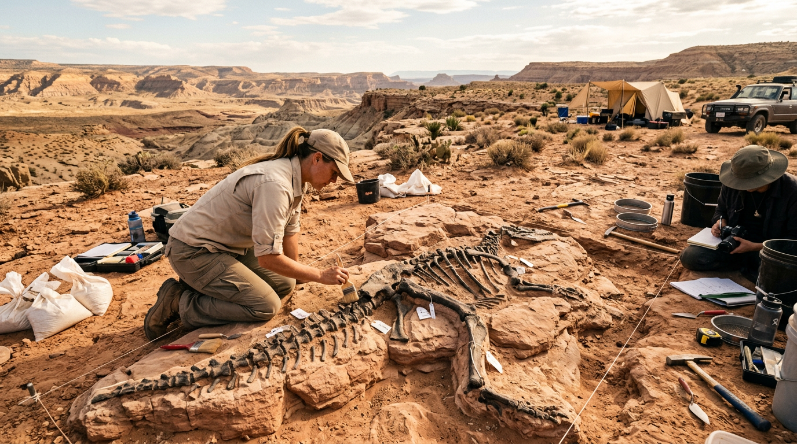
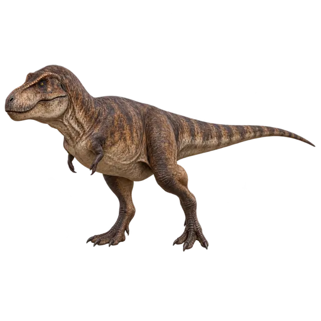

Kursy
Od pierwszej kości do rekonstrukcji historii.
Lekcje prowadzą krok po kroku przez anatomię, geologię, ewolucję i interpretację dowodów.
Interaktywna nauka paleontologii bez wkuwania list nazw. Kursy, encyklopedia, gry i kolekcja łączą się w jeden system, w którym każda odpowiedź i każde odkrycie buduje Twój profil badacza.

Trias: pierwsze dinozaury pojawiły się w świecie zdominowanym przez inne linie gadów.
Każda sekcja korzysta z tego samego konta, XP i postępu. Możesz zacząć od lekcji, a skończyć na mapie odkryć albo w wykluwarni.

Lekcje prowadzą krok po kroku przez anatomię, geologię, ewolucję i interpretację dowodów.

Porównuj taksony, okresy, klady i miejsca odkryć zamiast czytać oderwane ciekawostki.
Mapa odkryć, dedukcja, memory i scenariusze, które nagradzają trafne decyzje.
Wszystkie posiadane jajka równocześnie dostają XP z nauki i gier.

Forum społeczności jest częścią platformy, a nie osobnym dodatkiem.
Wygląd i popularna nazwa potrafią mylić. Wybierz odpowiedź.